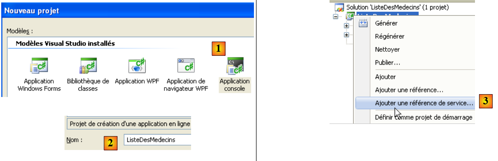
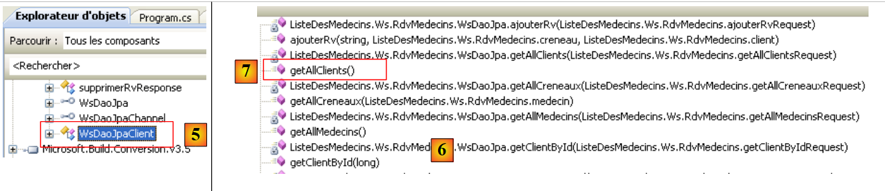
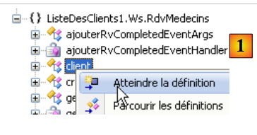
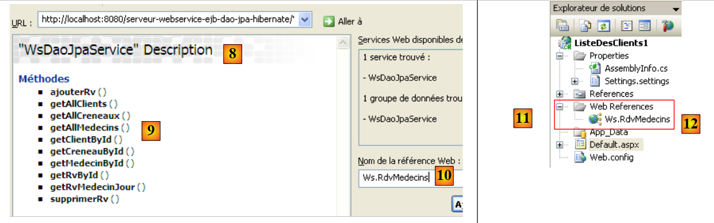
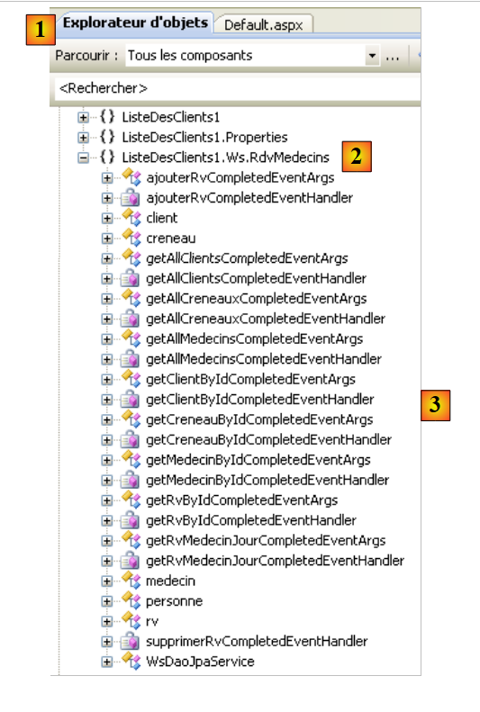
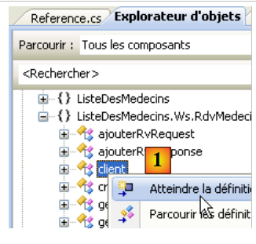
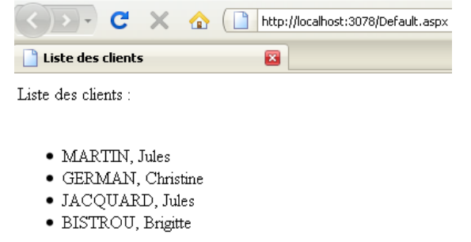
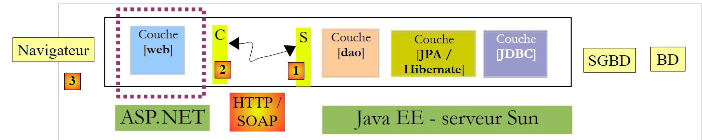
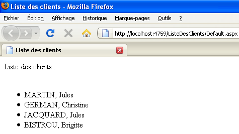

5. .NET clients of the J2EE appointment service
5.1. A C# 2008 client
We will now assume that the previous web service is available and active. A web service can be used by clients written in various languages. Here, we will write a C# console client to display the list of doctors.
 |
Let’s start by creating the C# project:
 |
We create a console application [1] named [ListeDesMedecins] [2]. In [3], we create a reference to a web service. This tool is similar to the one used in NetBeans: it creates a local proxy for the remote web service.
 |
- In [1], specify the URI of the web service’s WSDL file (see Section 4.10.2).
- In [2], we ask the wizard to discover the web services exposed at this URI
- In [3], the found web service is displayed, and in [4], the methods it exposes.
- In [5], specify the namespace in which the C proxy classes should be generated
- In [6], the C proxy is generated.
 |
- In [1], the web reference we just created. Double-click on it.
- In [2], the object explorer opened by double-clicking.
- In [3], select the namespace [ListeDesMedecins.Ws.RdvMedecins], which is the namespace of the generated C proxy. The first term [ListeDesMedecins] is the default namespace of the created C# application (we named it ListeDesMedecins). The second term [Ws.RdvMedecins] is the namespace we assigned to the C proxy in the wizard. Ultimately, the C proxy objects belong to the namespace [ListeDesMedecins.Ws.RdvMedecins].
- In [4], the objects of the generated C proxy
 |
- in [5], [WsDaoJpaClient] is the class that locally implements the methods of the remote web service.
- In [6], the methods of the [WsDaoJpaClient] class. Here we find the methods of the remote web service, such as the getAllClients method in [7].
Let’s examine the code for the generated entities:
 |
In [1] above, we request to view the code for the [client] class:
...
public partial class client : personne {
}
....
public partial class personne : object, System.ComponentModel.INotifyPropertyChanged {
...
public long id {
...
}
...
}
Above, we have included only the code necessary for our study.
- line 2: the [customer] class derives from the [person] class, just like in the web service.
- line 8: a public property of the [person] class
What we notice is that the generated code does not follow standard C# coding conventions. The names of classes and public properties should start with a capital letter.
Let’s return to our C# application:
 |
[Program.cs] [1] is the test class. Its code is as follows:
using System;
using ListeDesMedecins.Ws.RdvMedecins;
using Client = ListeDesMedecins.Ws.RdvMedecins.client;
namespace ListeDesMedecins {
class Program {
static void Main(string[] args) {
try {
// client [dao] layer instantiation
WsDaoJpaClient dao = new WsDaoJpaClient();
// list of doctors
foreach (Client client in dao.getAllClients()) {
Console.WriteLine(String.Format("{0} {1} {2}", client.titre, client.prenom, client.nom));
}
} catch (Exception e) {
Console.WriteLine(e);
}
}
}
}
On line 12, the [Client] class from the C proxy is used, even though we just saw that it was actually called [client]. It is the declaration on line 3 that allows us to use [Client] instead of [client]. This allows us to comply with the class naming convention. Still on line 12, the [getAllClients] method is used because that is what it is called in the C proxy. The C# coding standard would require it to be called [GetAllClients].
Running the previous program [1] yields the results shown in [2].
5.2. A First ASP.NET 2008 Client
We will now write a first ASP.NET / C# client to display the list of clients.
 |
In this architecture, there are two web servers:
- the one running the remote web service
- the one running the ASP.NET client for the remote web service
We will create the ASP.NET client web project using Visual Web Express 2008 SP1. The following section shows how to create the same project if you do not have Visual Web Express 2008 SP1.
 |
We create a web application [1, 2, 3] named [ClientList1] [4, 5, 6]. The project created in this way is visible in [7].
 |
- In [5], right-click on the project name to add a web service reference.
- In [6], specify the URI of the web service’s WSDL file (see section 4.10.2).
- In [7], ask the wizard to discover the web services exposed at this URI
 |
- In [8], the found web service is displayed, and in [9], the methods it exposes are shown.
- In [10], specify the namespace in which the C proxy classes should be generated
- In [11], the reference of the generated web service
Double-clicking on the reference [Ws.Rdvmedecins] [12] displays the classes and interfaces generated for the C proxy:
 |
- In [1], the object explorer opened by double-clicking.
- In [2], select the namespace [ListeDesClients1.Ws.RdvMedecins], which is the namespace of the generated C proxy. The first term [ListeDesClients1] is the default namespace of the created ASP.NET application (we named it ListeDesClients1). The second term [Ws.RdvMedecins] is the namespace we assigned to the C proxy in the wizard. Ultimately, the C proxy objects belong to the namespace [ListeDesClients1.Ws.RdvMedecins].
- In [3], the objects of the generated C proxy
 |
- In [4], [WsDaoJpaService] is the class that locally implements the methods of the remote web service.
- In [5], the methods of the [WsDaoJpaService] class. Here we find the methods of the remote web service, such as the getAllClients method in [6].
Let’s examine the code for the generated entities:
 |
In [1] above, we request to view the code for the [client] class:
public partial class client : personne {
}
...
public partial class personne {
...
public long id {
...
}
Above, we have included only the code necessary for our study.
- Line 1: The [client] class derives from the [person] class, just like in the web service.
- line 5: the [person] class
- line 7: a public property of the [person] class
This code is similar to the one already discussed for the C# client in Section 5.1.
- The namespace of the generated C proxy is the one defined in its creation wizard, prefixed by the namespace of the web project itself: ListeDesClients1.Ws.RdvMedecins
- The proxy class that locally implements the methods of the remote web service is called WsDaoJpaService.
- Class and property names begin with a lowercase letter
We can write a page [Default.aspx] displaying the list of clients. The page is as follows:
 |
No. | Type | Name | Role |
MultiView | Views | View container | |
View | CustomerView | the view containing the list of customers | |
Repeater | RepeaterClients | displays the list of customers as a bulleted list | |
View | ErrorView | the view that displays any errors | |
Label | ErrorLabel | the error text |
The code for this page is as follows:
<%@ Page Language="C#" AutoEventWireup="true" CodeBehind="Default.aspx.cs" Inherits="ListeDesClients1._Default" %>
<%@ Import Namespace="ListeDesClients1.Ws.RdvMedecins" %>
<!DOCTYPE html PUBLIC "-//W3C//DTD XHTML 1.1//EN" "http://www.w3.org/TR/xhtml11/DTD/xhtml11.dtd">
<html xmlns="http://www.w3.org/1999/xhtml">
<head id="Head1" runat="server">
<title>Liste des clients</title>
</head>
<body>
<form id="form1" runat="server">
<div>
<asp:MultiView ID="Vues" runat="server">
<asp:View ID="VueClients" runat="server">
Liste des clients :<br />
<br />
<ul>
<asp:Repeater ID="RepeaterClients" runat="server">
<ItemTemplate>
<li>
<%#(Container.DataItem as client).nom%>,
<%#(Container.DataItem as client).prenom%>
</li>
</ItemTemplate>
</asp:Repeater>
</ul>
</asp:View>
<asp:View ID="VuesErreurs" runat="server">
L'erreur suivante s'est produite :<br />
<br />
<asp:Label ID="LabelErreur" runat="server"></asp:Label></asp:View>
</asp:MultiView><br />
</div>
</form>
</body>
</html>
Note, on line 3, the need to import the [ListeDesClients1.Ws.RdvMedecins] namespace from the web service's C proxy so that the [client] class on lines 20 and 21 is accessible.
The control code [Default.aspx.cs] associated with the presentation page [Default.aspx] is as follows:
using System;
using ListeDesClients1.Ws.RdvMedecins;
namespace ListeDesClients1
{
public partial class _Default : System.Web.UI.Page
{
protected void Page_Load(object sender, EventArgs e)
{
try
{
// local proxy instantiation of remote [dao] layer
WsDaoJpaService dao = new WsDaoJpaService();
// customer view
Vues.ActiveViewIndex = 0;
// client view initialization
RepeaterClients.DataSource = dao.getAllClients();
RepeaterClients.DataBind();
}
catch (Exception ex)
{
// error view
Vues.ActiveViewIndex = 1;
//initialization error view
LabelErreur.Text = ex.ToString();
}
}
}
}
- Line 8: The Page_Load method is executed when the page is initially loaded. This loading occurs every time a client requests the page.
- line 13: the local C proxy is instantiated. This C proxy implements the remote web service interface. The application will communicate with this C proxy.
- line 15: if no exception occurs during the instantiation of the local proxy C, the view named "VueClients" must be displayed, i.e., view #0 in the page's "Vues" MultiView.
- Line 17: The repeater’s data source is the list of clients provided by the getAllClients method of proxy C.
- line 23: if an exception occurs when instantiating the local C proxy, the view named "VueErreurs" must be displayed, i.e., view #1 in the page's "Vues" MultiView.
- Line 25: The exception is displayed in the "LabelErreur" label.
Running the web project produces the following result:
 |
5.3. A second ASP.NET 2008 client
We will now write a second ASP.NET / C# client, this time using the Visual Web Developer Express 2008 version that preceded SP1.
 |
Let’s create the .NET client web project:
 |
We create a website [1, 2] named [ClientList] [3].
 |
- In [4], the web project
- in [5], by right-clicking on the project name, we add a service reference as we did previously.
- In [6], the project once the reference to the remote web service has been added
Unlike the SP1 web project discussed earlier, we do not have access to the web service client objects via the Object Explorer.
Important to note:
- The namespace of the generated C proxy is the one defined in its creation wizard: Ws.RdvMedecins
- The proxy class that locally implements the methods of the remote web service is called WsDaoJpaClient.
- Class and property names begin with a lowercase letter
We can write a page [Default.aspx] displaying the list of clients. The page is as follows:
 |
No. | Type | Name | Role |
MultiView | Views | View container | |
View | CustomerView | the view containing the list of customers | |
Repeater | RepeaterClients | displays the list of customers as a bulleted list | |
View | ErrorView | the view that displays any errors | |
Label | ErrorLabel | the error text |
The code for this page is as follows:
<%@ Page Language="C#" AutoEventWireup="true" CodeFile="Default.aspx.cs" Inherits="_Default" %>
<%@ Import Namespace="Ws.RdvMedecins" %>
<!DOCTYPE html PUBLIC "-//W3C//DTD XHTML 1.1//EN" "http://www.w3.org/TR/xhtml11/DTD/xhtml11.dtd">
<html xmlns="http://www.w3.org/1999/xhtml">
<head id="Head1" runat="server">
<title>Liste des clients</title>
</head>
<body>
<form id="form1" runat="server">
<div>
<asp:MultiView ID="Vues" runat="server">
<asp:View ID="VueClients" runat="server">
Liste des clients :<br />
<br />
<ul>
<asp:Repeater ID="RepeaterClients" runat="server">
<ItemTemplate>
<li>
<%#(Container.DataItem as client).nom%>, <%#(Container.DataItem as client).prenom%>
</li>
</ItemTemplate>
</asp:Repeater>
</ul>
</asp:View>
<asp:View ID="VuesErreurs" runat="server">
L'erreur suivante s'est produite :<br />
<br />
<asp:Label ID="LabelErreur" runat="server"></asp:Label></asp:View>
</asp:MultiView><br />
</div>
</form>
</body>
</html>
Note, on line 2, the need to import the [Ws.RdvMedecins] namespace from the web service's C proxy so that the [client] class on line 19 is accessible.
The control code [Default.aspx.cs] associated with the presentation page [Default.aspx] is as follows:
using System;
using Ws.RdvMedecins;
public partial class _Default : System.Web.UI.Page
{
protected void Page_Load(object sender, EventArgs e)
{
try
{
// local proxy instantiation of remote [dao] layer
WsDaoJpaClient dao = new WsDaoJpaClient();
// customer view
Vues.ActiveViewIndex = 0;
// client view initialization
RepeaterClients.DataSource = dao.getAllClients();
RepeaterClients.DataBind();
}
catch (Exception ex)
{
// error view
Vues.ActiveViewIndex = 1;
//initialization error view
LabelErreur.Text = ex.ToString();
}
}
}
This code is similar to that of the previous version. Running the web project produces the following result:
